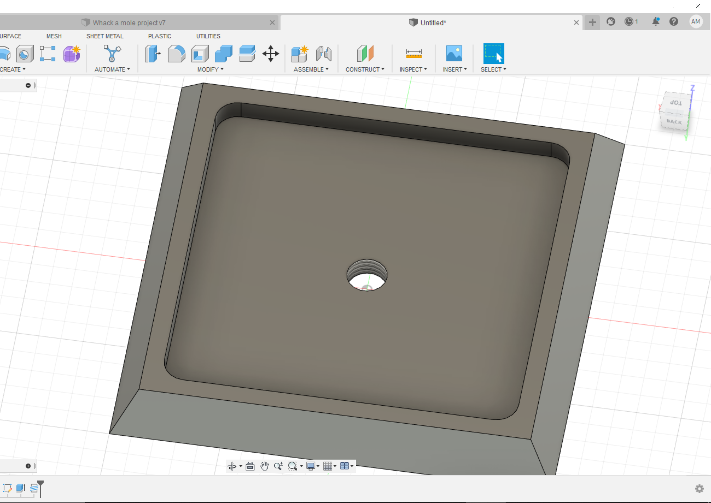

#Completing last week’s assignment using 3D printing techniques
Last week, I was unable to get the “whack-a-mole” project working properly with a motor, so this week I decided to 3D print some pieces that will allow me to connect the motor to the mechanical movement of the kinetic sculpture. I decided to 3D print 2 gears - with the smaller one fitting the motor handle perfectly - and attached them to the back of my sculpture. The geras being 1:2 ratio, allowed me to take the rapid movement of the motor and translate it into a more powerful, slower movement - which was necessary for my sculpture.
<div class="two-image-row">
<img src="./Images_week_4/20220923_194935.jpg" class="half-width-image"/>
</div>
Here is a video of the final kinetic sculpture:
<div class = "flex-center-full-size">
<img src="./Images_week_4/final_video.gif">
</div>
#This week’s assignment
##My first print
This week, we were assigned to use 3D printers in different ways. For my first short print, I decided to model a tripod head in fusion 360 and then send it to PrusaSlicer to convert the 3D model into Gcode. Unfortunately, an issue occurred when transferring the model from one program to the other, as the threaded insert was replaced by a simple hole. I am unsure if this happened because the 3D printer cannot print the threaded insert with such high detail or if it was another more technical software problem. Regardless, I decided to 3D print the model, and after one failed try - because I didn’t place a great base in the PrusaSlicer program and the object slipped out while printing- I was able to print it entirely.
<div class="two-image-row">

</div>
##The head statue and 3D scan
I then wanted to 3D print something more ambitious - so I decided to 3D scan my face (which was technically part of the 3D scanning assignment) using the lab’s lidar scanner.
<div class="two-image-row">
</div>
I then took the model into Blender’s sculpting tool and corrected its many scanning mistakes - this included the top portion of my head which was not properly scanned. I then imported it into the PrusaSlicer program, and created some supports for the structure.
<div class="two-image-row">
</div>
I then let the statue print overnight, as it took about 8 hours to print entirely. Below, an image at the beggining and end of the printing process.
<div class="two-image-row">
<img src="./Images_week_4/20220924_131918.jpg" class="half-width-image"/>
</div>
Bellow, you can download the 3D model obj file of my head by clicking on the picture of my final 3D print or on the link.
<a href="./Images_week_4/hed.obj" download> Click here to download! <a\>
<div class = "flex-center-full-size">
<img src="./Images_week_4/20220924_132552.jpg">
</div>